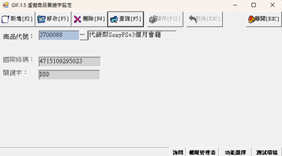
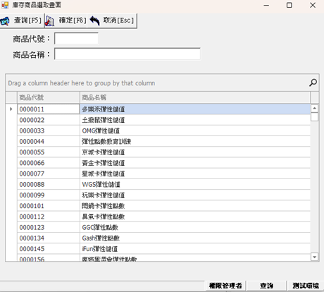
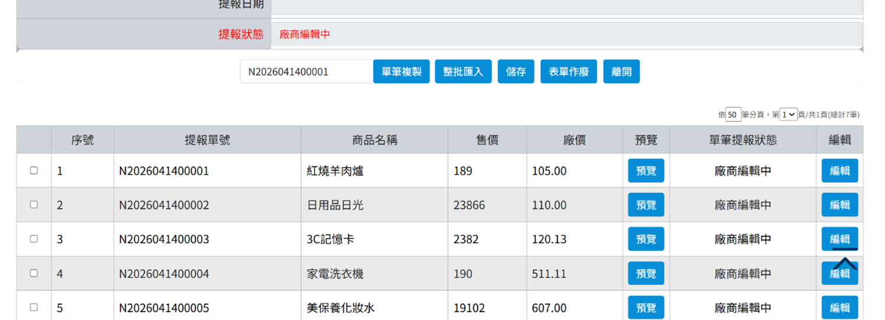
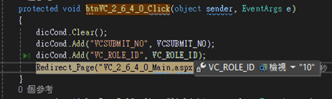
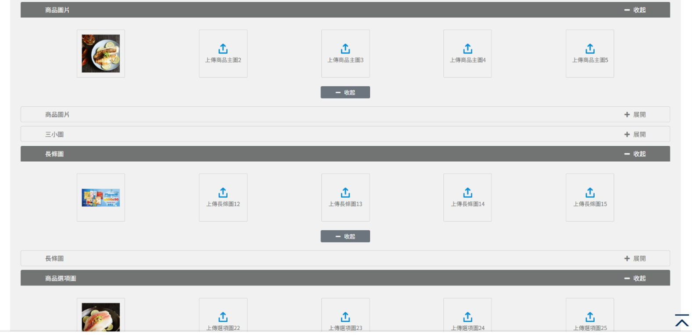
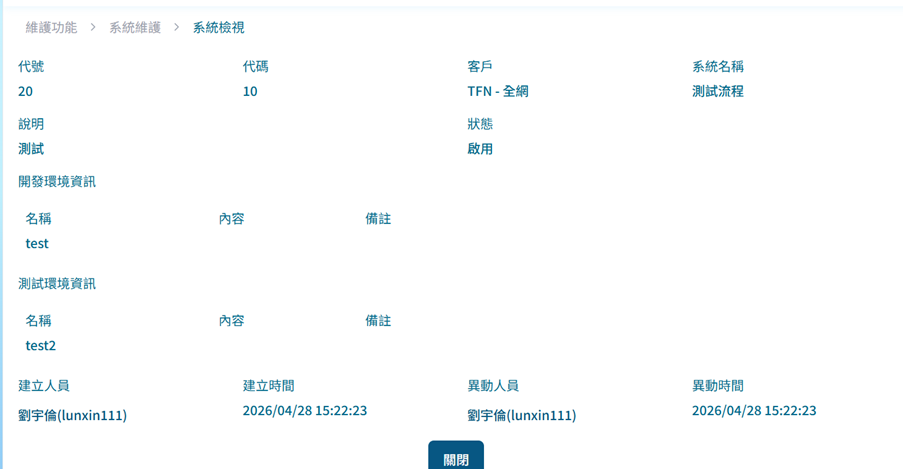
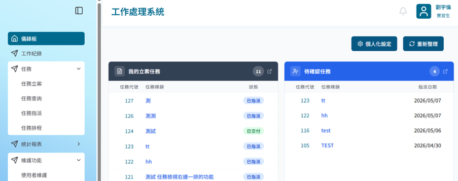
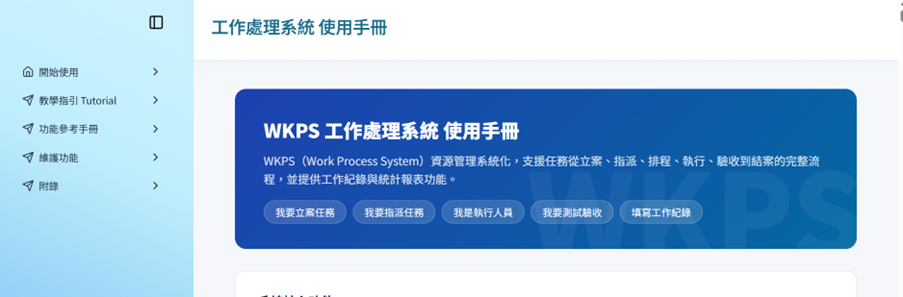

這是遇到比較麻煩的升級專案，因為有兩個畫面，且資料需要放到表格裡面，升級後套件的表格程式碼寫法不同，花了一些時間解決表格的部分。


這支專案做功能修改、畫面調整、新增參數與更換 SP。因有新增參數與 SP 更換，在頁面跳轉時需要確認傳遞的參數是否正確以及 SP 是否有接收到。



結合 AI 協作開發，將需求書給 AI 後等其完成，再檢視內容與修改調整。因是第一次開發這個架構，對架構與程式尚不熟悉，初期太相信 AI，在 code review 時被調整了很多東西。

WKPS QA 負責對已完成功能進行測試並撰寫測試報告；使用者手冊透過 AI 協作方式製作，並加上 skill 和 instruction 讓 AI 能照我們想要的流程開發並產生想要的架構與內容。


在工作中主要扮演「學習者」與「試錯者」的角色。主管提供不同的工作讓我們體驗，即使做錯也不會苛責，並表示他是「服務員負責擦屁股的」，讓我們有充分的試錯空間去發揮和體驗。
學校教的和公司實際用到的技術有很大落差，但公司完善的培訓資料與熱心的同事讓我能快速掌握所需技術。整體而言，學到了開發時所需使用的技術，以及真實工作中最重要的溝通與解決問題的能力。